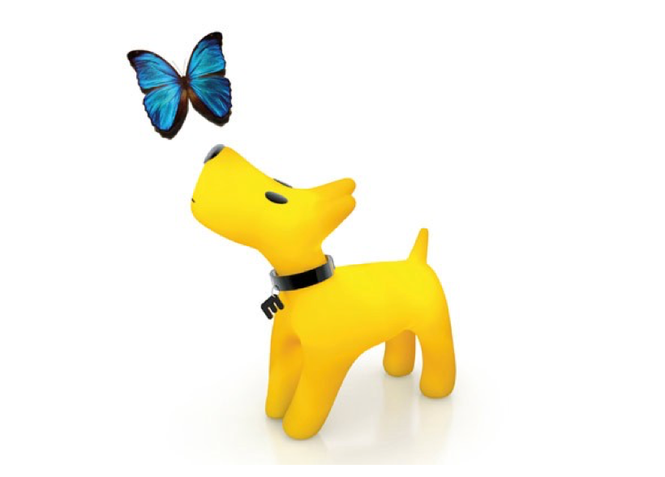

Я расскажу о единичном случае из своего опыта трудоустройства.
Для начала придумаем название (а, как же конфиденциальность - конечно!) для компании, с которой я общалась, пусть будет “Железки для повозок”.
Железки для повозок довольно крупная компания, которая располагается почти в Москве, имеет основной сайт компании и несколько сайтов для дочерних проектов.
Мне прислали приглашение на встречу, я доехала на оленях и собачьих упряжках до “почти в Москве”. Пообщалась с hr-специалистом, который, конечно, понимает с полуслова специфику моей работы, а времени у профильного специалиста или руководителя отдела видимо не нашлось.
После общения мне предложили сделать тестовое задание. Я согласилась и мне прислали..
Задание: спроектировать мобильное приложение.
Как любит говорить мой коллега Сергей Немеров: любое задание, которое не укладывается в 40 минут и требует больше времени - не является тестовым заданием.
Я помня заветы Ильича, Немерова и коллег, а так же имея уже опыт тестовых заданий и общения со специфическими клиентами, сделала тестовое, потратив больше чем 40 минут - вводных данных и детализации по заданию было мало, поэтому я увлеклась и сделала около трети экранов от всего user flow - порядка 20 штук.
Отослав тестовое я получила комментарии, типа:
на кнопке вместо Подтвердить нужно Отправить (окей)
очень быстро клиенту предлагают Меню ресторана (окей, можно было еще 8 промежуточных экранов нарисовать, чтобы пользователь задолбался и выключил приложение)
очень детализирован экран с оплатой (простите, что сделала пользователю удобно, дабы он не разбирался, где номер, год, а где трехзначный код - все на картинке видно)
еще пара таких аргументов, но самый последний был прекрасен, ибо сразу показывал, что меня “тестил” картинко-малеватель, у коего в приоритете палитра, шрифты и красота экранов…
данный кандидат открыто говорит, что он не считает себя дизайнером (ох, да неужели?)
Вакансия называлась “Проектировщик интерфейсов” и в описании ее не было указано, что мне необходимо рисовать макеты (но так уж и быть, я могу вам нарисовать лэндинг в Sketch, если так нужно), а в общении с hr-специалистом я настойчиво предварительно выяснила: нужен дизайнер или проектировщик-аналитик. Мне сказали, что only проектировщик.
В процессе этого экшна (все приключение заняло 4 рабочих дня вместе с тестовым заданием) я еще раз убедилась, что:
среди дизайнеров людей с аналитическим складом ума крайне мало,
компания сама видимо не очень понимает, кто ей нужен,
как вариант, процесс общения с соискателями не выстроен,
либо очередной лохотрон: сделай нам тестовое, которое не тестовое.
Но это было предисловие.
А суть в том, что этот случай из жизни рассказывает не о том, что мне дали оффер или не дали оффер или о том, что “это уникальный жизненный опыт”.
Нет, эта история про то, что у вас может быть весь боекомплект опытного специалиста и даже в этой ситуации вас просто не захотят узнать и услышать, потому что есть еще 100500 факторов +.
Просто по картинкам в портфолио мне каждый мчудак расскажет, что все криво и он вообще бы не так нарисовал (ох, уж эти ментальные модели). Знаю я про ISO, про HCD, про HIG. Много знаю, но чаще всего мой проект в портфолио - это компромисс, тот самый краеугольный: потребности пользователя/бизнеса/разработки - просто танцы на лезвии ножа.
И вот правильный работодатель пригласит, поговорит и спросит: а на кой у Вас в этом проекте на Главной странице целых три рекламных блока, а ему расскажу, как 2 месяца у меня Генеральный директор и Президент одного крупного холдинга требовали, чтобы на главной было 16 (!!!) баннеров. И плевать им на пользователя, юзабилити и ux, "нужны баннеры и собачка как у Евросети пусть бегает по странице".
 ВЕРНУТЬСЯ ВЕРНУТЬСЯ К СПИСКУ ПОДЕЛИТЬСЯ ЗАПИСЬЮ